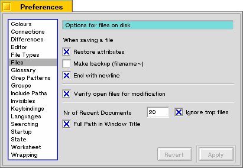

Files
Use this pane to set various options having to do with stored files on disk.
If you check restore attributes, Pe will copy all the attributes from the original file to the new one. This is useful e.g. for e-mail documents, where the information on sender and so on is stored inside attributes.
When Pe saves a file it first makes a backup of the file with the same name of the original, except that it attaches a tilde (~) to it. If you want to keep this file around, check the option "make backup". Otherwise Pe will delete this file when it has succesfully saved the new file.
End with newline, when checked, will force a file to have a newline character after the last line. Some programs require all text files to have these.
Verify open files, when checked, will keep an eye on the file on the disk which corresponds to the one displayed. Whenever this file changes, Pe will notify the user of this event and give the user the option to reload the file.
Nr of Recent Documents controls the size of the Open Recent submenu. You can optionally leave temporary files out of this list, temp files are files created in your local tmp directory.
Full Path in Window Title will display the full path of the current file in the Title bar of the Window.
Last updated: 05/17/98
Copyright 1997,1998, © Hekkelman Programmatuur,
info@hekkelman.com